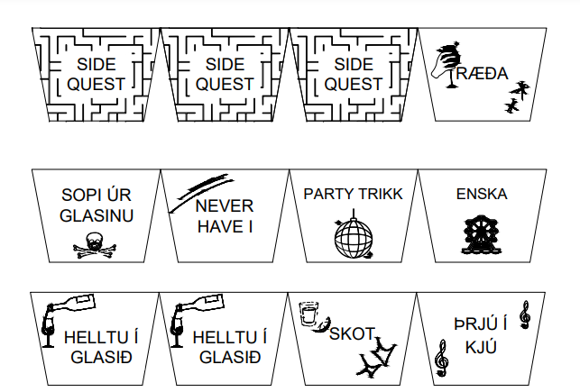
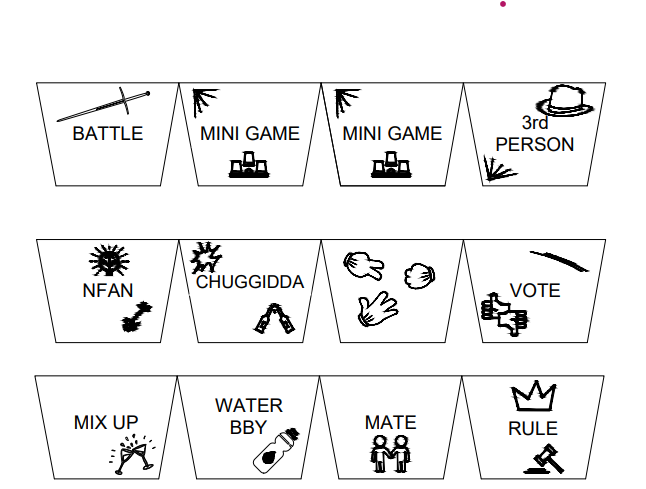
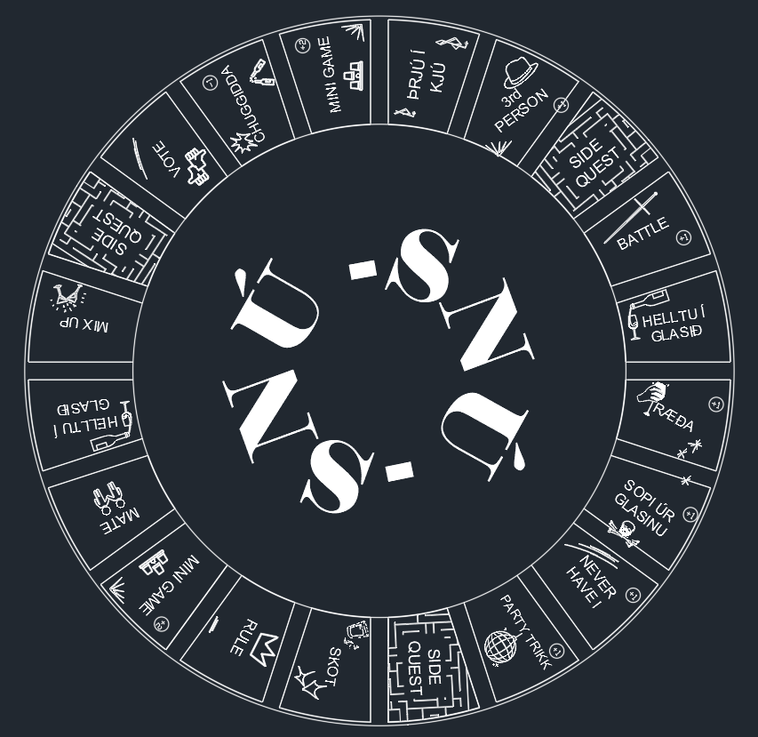
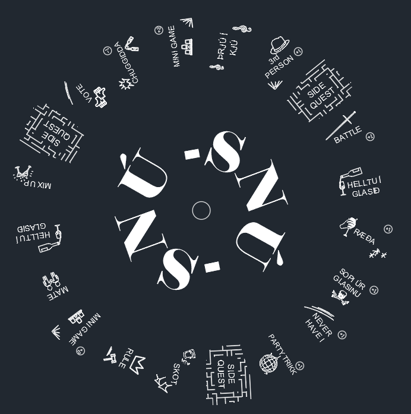
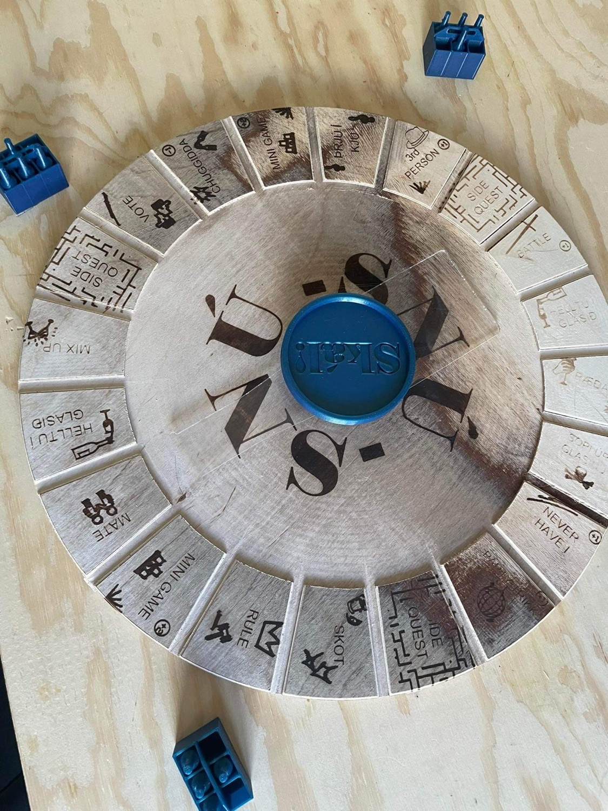

Verkefnalýsing:
Í lokaverkefni þessa áfanga komu allar stelpurnar á seinasta ári í vélaverkfræði saman og ákváðu að búa til borðspil, nánara tiltekið drykkjuborðspil. Fjallað er um verkefnið í heild sinni á vefsíðu Sigurbjargar Sjá hér.
Mitt framlag:
Við hönnun spilsins var mikil samvinna og var grunn útlit og virkni spilsins ákveðið í sameiningu. Þó var ákveðið að skipta ábyrgðinni upp svo hver og einn bæri sérstaka ábyrgð á einstökum hlut. Ég tók að mér að hanna efsta lag spilsins sem var svo geislaskorinn ofan á spilið.
Innblástur af reitum var fundinn á vefsíðunni Canva og næst voru þeri teiknaðir upp með autoCAD. Byrjað var á að hanna hvern reit
 
Þegar því var lokið voru reitirnir látnir passa inn á spilið. Nafn spilsins var ákveðið og hannað var merki sem sett var í miðju spils.

Þegar loka hönnun lá fyrir voru allar stoðlínur fjarlægðar og hönnunin var geislaskorin í spilið


Prentunin tókst ekki alveg eins vel og vonast hafði verið, meðal annars vegna þess að prentarinn skar ílla innarlega í prentaranum.
Hér er hægt að nálgast hönnunarfæl: Hönnun
Einnig bjó ég til skemmtilegt TikTok - myndband sem vakti mikla lukku á miðlinum.